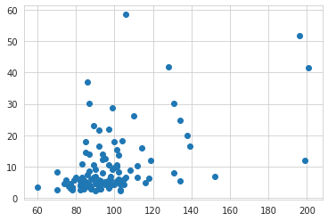
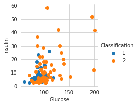
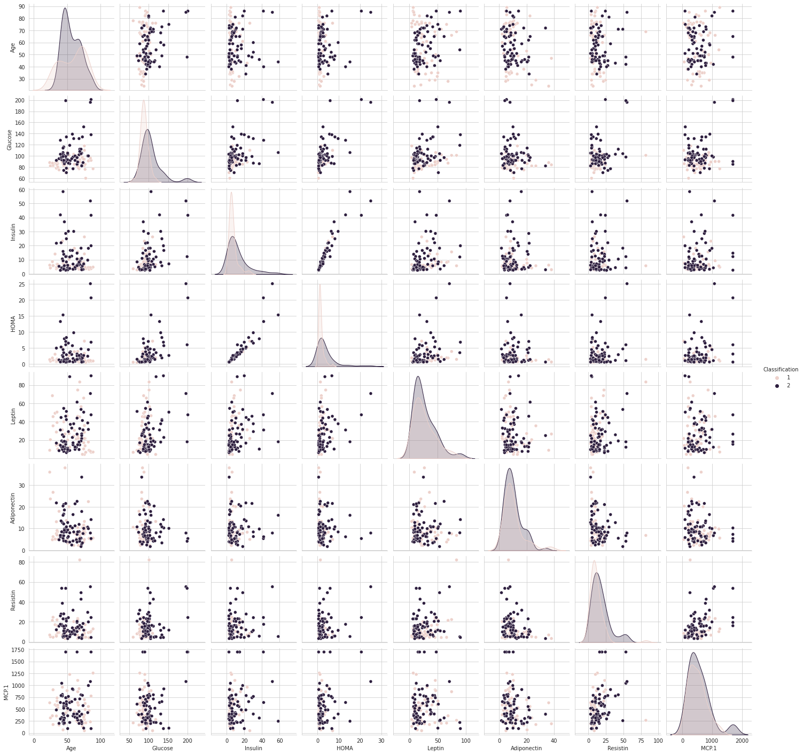
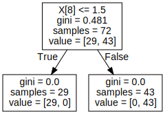

Contents
#UTS Penambangan Data Nama : Abdul Wachid Al Aziz NIM : 200411100103
import numpy as np
import pandas as pd
import matplotlib.pyplot as plt
import seaborn as sns
uts = pd.read_csv("https://archive.ics.uci.edu/ml/machine-learning-databases/00451/dataR2.csv")
uts.info()
<class 'pandas.core.frame.DataFrame'>
RangeIndex: 116 entries, 0 to 115
Data columns (total 10 columns):
# Column Non-Null Count Dtype
--- ------ -------------- -----
0 Age 116 non-null int64
1 BMI 116 non-null float64
2 Glucose 116 non-null int64
3 Insulin 116 non-null float64
4 HOMA 116 non-null float64
5 Leptin 116 non-null float64
6 Adiponectin 116 non-null float64
7 Resistin 116 non-null float64
8 MCP.1 116 non-null float64
9 Classification 116 non-null int64
dtypes: float64(7), int64(3)
memory usage: 9.2 KB
uts.describe()
| Age | BMI | Glucose | Insulin | HOMA | Leptin | Adiponectin | Resistin | MCP.1 | Classification | |
|---|---|---|---|---|---|---|---|---|---|---|
| count | 116.000000 | 116.000000 | 116.000000 | 116.000000 | 116.000000 | 116.000000 | 116.000000 | 116.000000 | 116.000000 | 116.000000 |
| mean | 57.301724 | 27.582111 | 97.793103 | 10.012086 | 2.694988 | 26.615080 | 10.180874 | 14.725966 | 534.647000 | 1.551724 |
| std | 16.112766 | 5.020136 | 22.525162 | 10.067768 | 3.642043 | 19.183294 | 6.843341 | 12.390646 | 345.912663 | 0.499475 |
| min | 24.000000 | 18.370000 | 60.000000 | 2.432000 | 0.467409 | 4.311000 | 1.656020 | 3.210000 | 45.843000 | 1.000000 |
| 25% | 45.000000 | 22.973205 | 85.750000 | 4.359250 | 0.917966 | 12.313675 | 5.474283 | 6.881763 | 269.978250 | 1.000000 |
| 50% | 56.000000 | 27.662416 | 92.000000 | 5.924500 | 1.380939 | 20.271000 | 8.352692 | 10.827740 | 471.322500 | 2.000000 |
| 75% | 71.000000 | 31.241442 | 102.000000 | 11.189250 | 2.857787 | 37.378300 | 11.815970 | 17.755207 | 700.085000 | 2.000000 |
| max | 89.000000 | 38.578759 | 201.000000 | 58.460000 | 25.050342 | 90.280000 | 38.040000 | 82.100000 | 1698.440000 | 2.000000 |
from sklearn.preprocessing import LabelEncoder
le = LabelEncoder()
y = le.fit_transform(y)
NameErrorTraceback (most recent call last)
<ipython-input-5-dc7cdd411eab> in <module>
1 from sklearn.preprocessing import LabelEncoder
2 le = LabelEncoder()
----> 3 y = le.fit_transform(y)
NameError: name 'y' is not defined
#Metrics
from sklearn.metrics import make_scorer, accuracy_score,precision_score
from sklearn.metrics import classification_report
from sklearn.metrics import confusion_matrix
from sklearn.metrics import accuracy_score ,precision_score,recall_score,f1_score
#Model Select
from sklearn.model_selection import KFold,train_test_split,cross_val_score
from sklearn.ensemble import RandomForestClassifier
from sklearn.model_selection import train_test_split
from sklearn.linear_model import LogisticRegression
from sklearn.ensemble import RandomForestClassifier
from sklearn import linear_model
from sklearn.linear_model import SGDClassifier
from sklearn.tree import DecisionTreeClassifier
from sklearn.neighbors import KNeighborsClassifier
from sklearn.svm import SVC, LinearSVC
from sklearn.naive_bayes import GaussianNB
x_train,x_test,y_train,y_test=train_test_split(x,y,test_size=0.3,random_state=0)
x_test
array([[ 21.47 , 78. , 3.469 , 0.6674356 ],
[ 22.21 , 86. , 36.94 , 7.83620533],
[ 24.21875 , 86. , 3.73 , 0.79125733],
[ 25.9 , 85. , 4.58 , 0.96027333],
[ 23.8 , 118. , 6.47 , 1.88320133],
[ 26.66666667, 201. , 41.611 , 20.6307338 ],
[ 30.8012487 , 87. , 30.212 , 6.4834952 ],
[ 30.83653053, 128. , 41.894 , 13.22733227],
[ 33.18 , 92. , 5.75 , 1.30486667],
[ 21.36752137, 78. , 2.64 , 0.507936 ],
[ 36.21227888, 101. , 15.533 , 3.86978807],
[ 23.12467037, 91. , 4.498 , 1.00965107],
[ 31.23140988, 131. , 30.13 , 9.73600733],
[ 32.27078777, 84. , 5.81 , 1.203832 ],
[ 32.5 , 93. , 5.43 , 1.245642 ],
[ 29.296875 , 98. , 4.172 , 1.00851147],
[ 30.48315806, 90. , 5.537 , 1.229214 ],
[ 23.62 , 105. , 4.42 , 1.14478 ],
[ 22.4996371 , 95. , 5.261 , 1.23282767],
[ 21.35991456, 93. , 2.999 , 0.6879706 ],
[ 22.03 , 84. , 2.869 , 0.59 ],
[ 18.67 , 88. , 6.107 , 1.33 ],
[ 38.57875854, 106. , 6.703 , 1.75261107],
[ 28.125 , 90. , 2.54 , 0.56388 ],
[ 24.74 , 106. , 58.46 , 15.28534133],
[ 27.63605442, 103. , 2.432 , 0.61789013],
[ 26.85 , 92. , 3.33 , 0.755688 ],
[ 28.65013774, 88. , 3.012 , 0.6538048 ],
[ 22. , 97. , 3.35 , 0.80154333],
[ 32.46191136, 134. , 24.887 , 8.22598307],
[ 34.42217362, 89. , 23.194 , 5.09185613],
[ 27.7 , 90. , 6.042 , 1.341324 ],
[ 21.36752137, 77. , 3.226 , 0.61272493],
[ 29.4 , 89. , 10.704 , 2.3498848 ],
[ 22.7 , 77. , 4.69 , 0.89078733]])
x_test1 = x_test[1:2][0:]
x_test1
array([[22.21 , 86. , 36.94 , 7.83620533]])
y_test[1,]
1
Tree
uts.head(10)
| Age | BMI | Glucose | Insulin | HOMA | Leptin | Adiponectin | Resistin | MCP.1 | Classification | |
|---|---|---|---|---|---|---|---|---|---|---|
| 0 | 48 | 23.500000 | 70 | 2.707 | 0.467409 | 8.8071 | 9.702400 | 7.99585 | 417.114 | 1 |
| 1 | 83 | 20.690495 | 92 | 3.115 | 0.706897 | 8.8438 | 5.429285 | 4.06405 | 468.786 | 1 |
| 2 | 82 | 23.124670 | 91 | 4.498 | 1.009651 | 17.9393 | 22.432040 | 9.27715 | 554.697 | 1 |
| 3 | 68 | 21.367521 | 77 | 3.226 | 0.612725 | 9.8827 | 7.169560 | 12.76600 | 928.220 | 1 |
| 4 | 86 | 21.111111 | 92 | 3.549 | 0.805386 | 6.6994 | 4.819240 | 10.57635 | 773.920 | 1 |
| 5 | 49 | 22.854458 | 92 | 3.226 | 0.732087 | 6.8317 | 13.679750 | 10.31760 | 530.410 | 1 |
| 6 | 89 | 22.700000 | 77 | 4.690 | 0.890787 | 6.9640 | 5.589865 | 12.93610 | 1256.083 | 1 |
| 7 | 76 | 23.800000 | 118 | 6.470 | 1.883201 | 4.3110 | 13.251320 | 5.10420 | 280.694 | 1 |
| 8 | 73 | 22.000000 | 97 | 3.350 | 0.801543 | 4.4700 | 10.358725 | 6.28445 | 136.855 | 1 |
| 9 | 75 | 23.000000 | 83 | 4.952 | 1.013839 | 17.1270 | 11.578990 | 7.09130 | 318.302 | 1 |
uts.info()
<class 'pandas.core.frame.DataFrame'>
RangeIndex: 116 entries, 0 to 115
Data columns (total 10 columns):
# Column Non-Null Count Dtype
--- ------ -------------- -----
0 Age 116 non-null int64
1 BMI 116 non-null float64
2 Glucose 116 non-null int64
3 Insulin 116 non-null float64
4 HOMA 116 non-null float64
5 Leptin 116 non-null float64
6 Adiponectin 116 non-null float64
7 Resistin 116 non-null float64
8 MCP.1 116 non-null float64
9 Classification 116 non-null int64
dtypes: float64(7), int64(3)
memory usage: 9.2 KB
uts.Classification.value_counts()
2 64
1 52
Name: Classification, dtype: int64
plt.scatter(uts['Glucose'],uts['Insulin'])
plt.show()

sns.set_style('whitegrid')
sns.FacetGrid(uts, hue = 'Classification') \
.map(plt.scatter, 'Glucose','Insulin') \
.add_legend()
plt.show()

sns.pairplot(uts.drop(['BMI'],axis=1), hue='Classification')
plt.show()

from sklearn import tree
import graphviz
from sklearn.tree import DecisionTreeClassifier
from sklearn.model_selection import train_test_split, cross_val_score
'''Here we separating independent varibles or target varibles from Iris dataset'''
X = uts[['BMI','Glucose','Insulin','HOMA','Leptin','Adiponectin','Resistin','MCP.1','Classification']]
y = uts['Classification']
#Before training the model we have split our data into Actual Train and Actual Test Dataset for training and validating purpose...
Xtrain, Xtest, Ytrain, Ytest = train_test_split(X, y, test_size=0.30, random_state=42)
#spliting data into validation train and validation test
Xt, Xcv, Yt, Ycv = train_test_split(Xtrain, Ytrain, test_size=0.10, random_state=42)
iris_clf = DecisionTreeClassifier(criterion='gini',min_samples_split=2)
iris_clf.fit(Xt, Yt)
tree.plot_tree(iris_clf)
[Text(0.5, 0.75, 'X[8] <= 1.5\ngini = 0.481\nsamples = 72\nvalue = [29, 43]'),
Text(0.25, 0.25, 'gini = 0.0\nsamples = 29\nvalue = [29, 0]'),
Text(0.75, 0.25, 'gini = 0.0\nsamples = 43\nvalue = [0, 43]')]
dot_data = tree.export_graphviz(iris_clf, out_file=None)
graph = graphviz.Source(dot_data)
graph

uts.describe()
| Age | BMI | Glucose | Insulin | HOMA | Leptin | Adiponectin | Resistin | MCP.1 | Classification | |
|---|---|---|---|---|---|---|---|---|---|---|
| count | 116.000000 | 116.000000 | 116.000000 | 116.000000 | 116.000000 | 116.000000 | 116.000000 | 116.000000 | 116.000000 | 116.000000 |
| mean | 57.301724 | 27.582111 | 97.793103 | 10.012086 | 2.694988 | 26.615080 | 10.180874 | 14.725966 | 534.647000 | 1.551724 |
| std | 16.112766 | 5.020136 | 22.525162 | 10.067768 | 3.642043 | 19.183294 | 6.843341 | 12.390646 | 345.912663 | 0.499475 |
| min | 24.000000 | 18.370000 | 60.000000 | 2.432000 | 0.467409 | 4.311000 | 1.656020 | 3.210000 | 45.843000 | 1.000000 |
| 25% | 45.000000 | 22.973205 | 85.750000 | 4.359250 | 0.917966 | 12.313675 | 5.474283 | 6.881763 | 269.978250 | 1.000000 |
| 50% | 56.000000 | 27.662416 | 92.000000 | 5.924500 | 1.380939 | 20.271000 | 8.352692 | 10.827740 | 471.322500 | 2.000000 |
| 75% | 71.000000 | 31.241442 | 102.000000 | 11.189250 | 2.857787 | 37.378300 | 11.815970 | 17.755207 | 700.085000 | 2.000000 |
| max | 89.000000 | 38.578759 | 201.000000 | 58.460000 | 25.050342 | 90.280000 | 38.040000 | 82.100000 | 1698.440000 | 2.000000 |